JIF Tools Explorer
The JIF Tools Explorer is an interactive web-based application built with Streamlit that provides a graphical interface for configuring and exploring JESD204 based systems with Analog Devices converters and clock chips.
New to JIF Tools?
Check out the Quick Start Guide for step-by-step examples to get up and running in minutes!
Installation
The JIF Tools Explorer is included with the pyadi-jif package. Install it with:
pip install 'pyadi-jif[cplex]'
For development or to include Streamlit dependencies:
pip install 'pyadi-jif[cplex,tools,draw]'
Launching the Application
Once installed, you can launch the JIF Tools Explorer from the command line:
jiftools
This will start a local web server and automatically open the application in your default web browser. The application typically runs at http://localhost:8501.
Application Overview
The JIF Tools Explorer provides six tools accessible from the sidebar:
JESD204 Mode Selector - Explore and filter JESD204 modes for ADI converters
Clock Configurator - Configure clock distribution chips for your system
System Configurator - Complete end-to-end system configuration (FPGA + Converter + Clock)
ADF4030 System Designer - Plan an Aion (ADF4030) clock-distribution system: pick the cascade / tree / hybrid / hybrid2 architecture and the per-Unit-Board sizing, then view the partition summary and a topology diagram. See Clocking → ADF4030 Architectures for the underlying Python API.
Basic JESD204 Calculator - Calculate lane rate, sample rate, and core clock directly from a small set of JESD204 link parameters
Frequency Planner - Place signals through a converter’s DDC/DUC chains and check what each output captures
JESD204 Mode Selector
The JESD204 Mode Selector helps you find suitable JESD204 modes for your ADI converter based on your application requirements.
Features
Part Selection: Choose from a wide range of ADI converters (ADCs, DACs, MxFEs, Transceivers)
Datapath Configuration: Configure decimation/interpolation settings
Sample Rate Control: Set converter sample rates with flexible units (Hz, kHz, MHz, GHz)
Mode Filtering: Filter JESD204 modes by parameters (M, L, N, Np, F, S, K, HD, CS)
Validation: Automatically validates modes against device constraints
Visual Diagrams: View clock tree diagrams for ADC converters
Export: Export mode tables to CSV

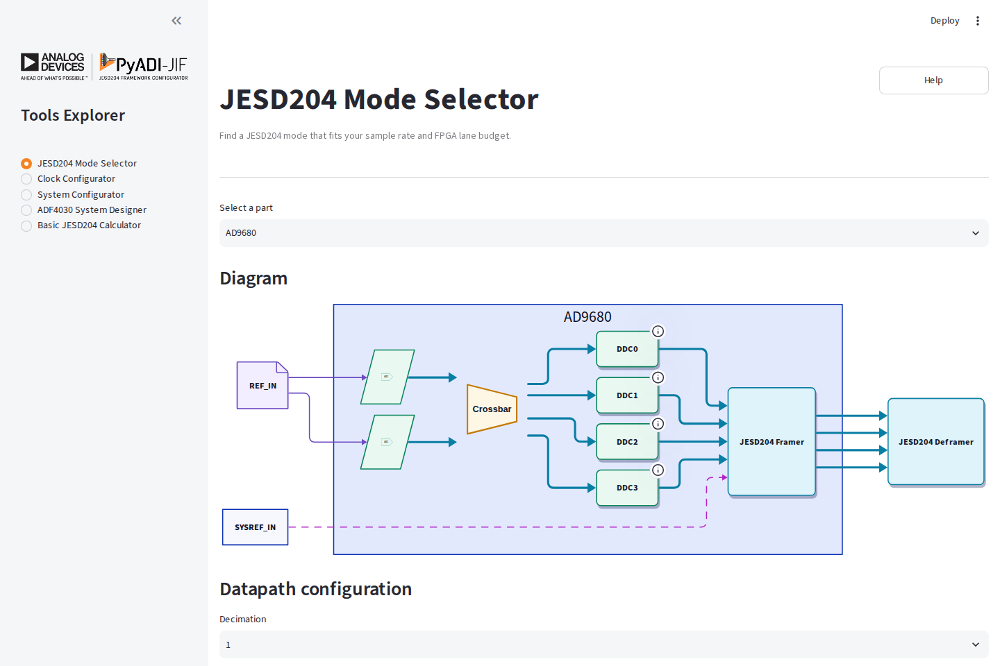
The Mode Selector pairs the selected converter’s datapath diagram with the controls that determine its sample rate and JESD204 operating mode.
Usage
1. Select a Converter
From the “Select a part” dropdown, choose your converter. The list includes:
ADCs: AD9680, AD9625, etc.
DACs: AD9144, AD9136, etc.
MxFEs: AD9081, AD9082, etc.
Transceivers: adrv9009, etc.
2. Configure Datapath
In the “Datapath Configuration” section:
For ADCs:
Set decimation values (CDDC, FDDC if available)
Configure converter sample rate
For DACs:
Set interpolation values (CDUC, FDUC if available)
Configure converter sample rate
3. Set Converter Rate
Select units (Hz, kHz, MHz, or GHz)
Enter the desired converter rate
The derived sample rate will be calculated automatically
4. Filter JESD Modes
Use the multiselect controls in the “Configuration” section to filter modes by JESD204 parameters:
M: Number of converters
L: Number of lanes
N: Converter resolution
Np: Number of bits per sample
F: Octets per frame
S: Samples per converter per frame cycle
K: Frames per multiframe
HD: High density mode
CS: Control bits per sample
5. View Results
The “JESD204 Modes” section displays:
Valid modes matching your criteria
Lane rates and sample rates for each mode
Toggle to show/hide invalid modes

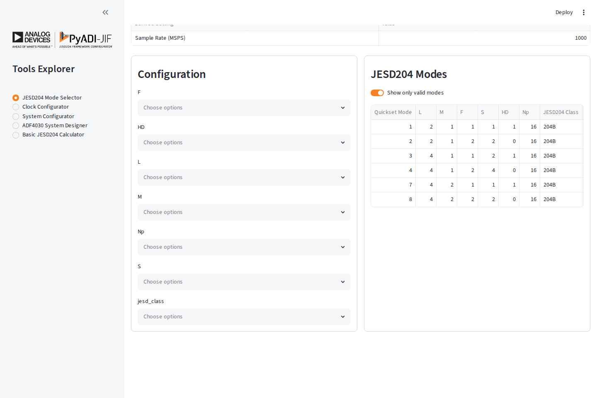
Filters and matching modes stay side by side, making it easy to compare lane counts, rates, and framing parameters while narrowing the result set.
Example Workflow
# Example: Configure AD9680 for 1 GSPS operation
1. Select part: "AD9680"
2. Set decimation: 1 (no decimation)
3. Set units: GHz
4. Set converter rate: 1.0 GHz
5. Filter by L=4 (4 lanes)
6. Review valid modes in the table
7. Note lane rates for FPGA configuration
Clock Configurator
The Clock Configurator helps you configure ADI clock distribution chips (e.g., HMC7044, AD9545) to generate the required clocks for your system.
Features
Multi-Clock Output: Configure multiple output clocks with different frequencies
Reference Clock: Set input reference clock frequency
Internal Configuration: Control internal clock chip parameters (VCO, dividers, etc.)
Visual Diagrams: View generated clock tree diagrams
Device Tree Export: Export configuration as device tree fragments (for supported chips)

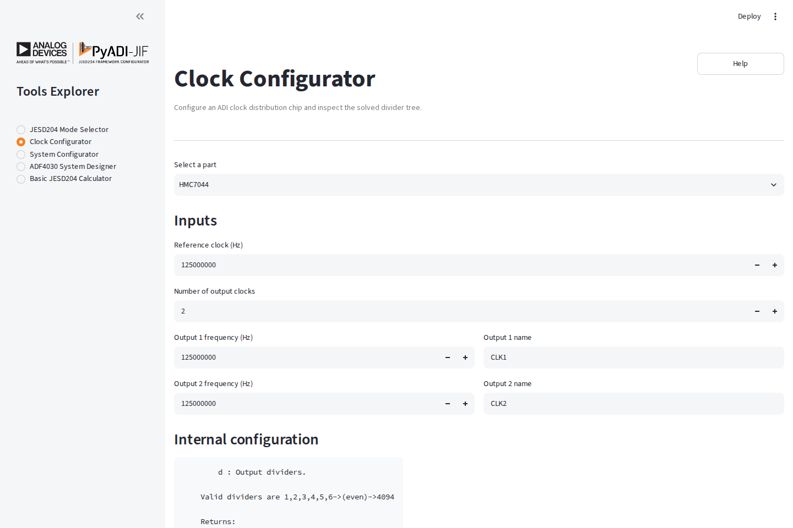
The Clock Configurator collects the reference, requested outputs, and optional internal-divider constraints on one page.
Usage
1. Select a Clock Chip
Choose from supported clock chips:
HMC7044 - High-performance clock distribution
AD9545 - Quad/Octal Clock Generator & Synchronizer
And more…
2. Configure Clocks
Reference Clock:
Set the input reference clock frequency
Output Clocks:
Specify number of clock outputs needed
For each output:
Set the desired frequency
Assign a descriptive name (e.g., “ADC_CLK”, “FPGA_REF”)
3. Internal Configuration
Adjust internal parameters if needed:
VCO frequency ranges
Divider values
Distribution settings
The tool will automatically calculate valid configurations.
4. View Results
If a valid configuration is found:
Configuration parameters are displayed
Clock tree diagram shows the signal flow
Device tree fragment (if supported) for Linux driver integration

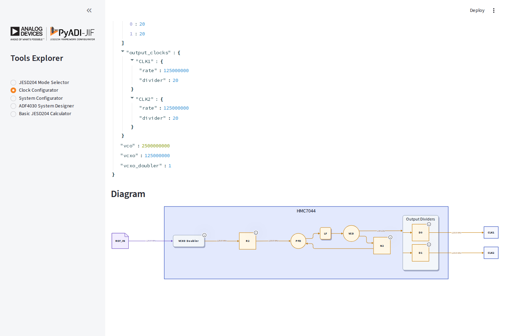
The solved divider values are followed by a generated clock tree, so the numeric configuration and signal path can be reviewed together.
Example Workflow
# Example: HMC7044 configuration for AD9680 + FPGA
1. Select part: "hmc7044"
2. Set reference clock: 125 MHz
3. Configure outputs:
- Output 1: 1000 MHz (name: "ADC_SAMPLE_CLK")
- Output 2: 250 MHz (name: "FPGA_REF_CLK")
4. Review generated configuration
5. View clock tree diagram
6. Export device tree fragment
System Configurator
The System Configurator provides end-to-end configuration of a complete JESD204 system including FPGA, converter, and clock chip.
Features
Complete System: Configure all components together
FPGA Integration: Set up FPGA transceiver parameters (Xilinx, Intel)
Development Kit Presets: Quick setup for common evaluation boards
Automatic Solving: Automatically finds valid configurations across all components
System Diagram: Visualize the complete system architecture

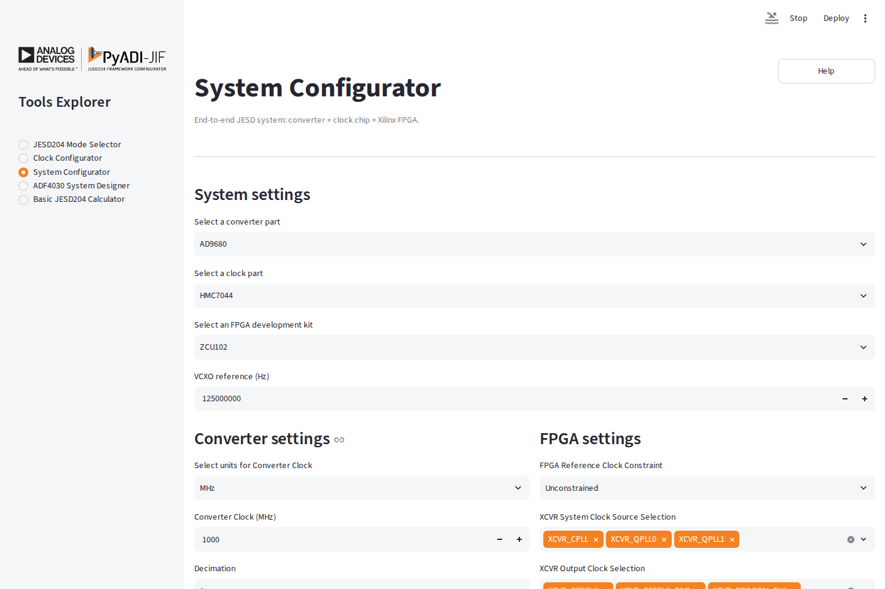
System-level choices appear first, followed by converter and FPGA controls in parallel columns for an at-a-glance view of the complete setup.
Usage
1. Select Components
Choose:
Converter: Your ADI converter (ADC/DAC/MxFE)
Clock Chip: Clock distribution chip
FPGA: Target FPGA vendor (Xilinx, Intel)
2. Configure Converter
Set converter parameters:
Sample clock frequency
Decimation/interpolation
JESD204 mode
3. Configure FPGA
Select FPGA settings:
Development kit (optional)
Transceiver type (QPLL/CPLL for Xilinx)
Reference clock frequency
4. Set VCXO/Reference
Specify the system reference clock (VCXO) frequency.
5. Solve and View
Click solve to:
Calculate complete system configuration
Validate all constraints are met
Generate system diagram
Show configuration for all components

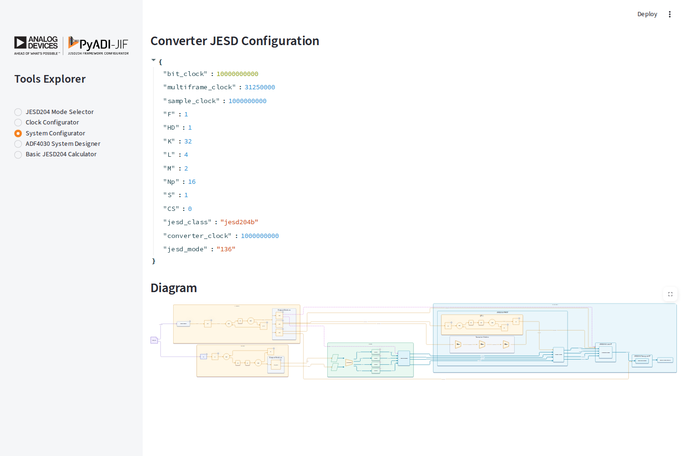
The solved JESD204 parameters sit directly above the complete converter,
clock, and FPGA signal-flow diagram. This example uses AD9680 quick mode 136
(0x88) with four lanes at 10 Gbps.
Example Workflow
# Example: AD9680 + HMC7044 + Xilinx ZCU102
1. Create system:
- Converter: "AD9680"
- Clock: "hmc7044"
- FPGA: "xilinx"
- VCXO: 125 MHz
2. Configure converter:
- Sample rate: 1 GSPS
- Decimation: 1
- Mode: 0x88
- K: 32
3. Configure FPGA:
- Dev kit: "zcu102"
- Force QPLL: Yes
4. Solve system
5. View results:
- Clock configuration
- Converter settings
- FPGA transceiver config
- JESD204 link parameters
- System block diagram
ADF4030 System Designer
The ADF4030 System Designer helps you plan how Aion (ADF4030) chips chain together to produce SYSREF for large multi-converter systems. Pick an architecture, set the per-Unit-Board sizing, and the page renders the partition summary plus a topology diagram of one Unit Board (or the full system).
Features
Four architectures: cascade, tree, hybrid (cascade-of-trees), hybrid2 (tree-of-cascades)
Partition summary: per-FPGA / per-Aion / per-Apollo counts, plus the number of Unit Boards required for the total Apollo count
Topology diagram: rendered SVG of the Aion / Apollo / FPGA hierarchy with the architecture-appropriate intra-FPGA connections
Scope selector: per-Unit-Board (fast) or full system (slower at large
N)

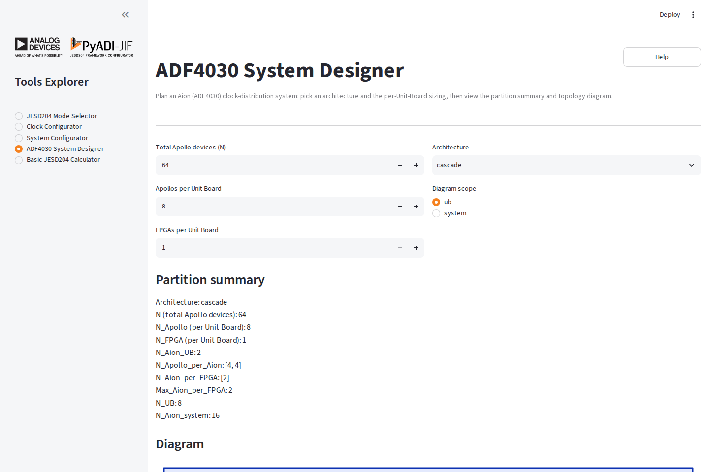
Architecture and board-sizing controls update the partition summary and topology in the same view.
Usage
1. Sizing inputs
Total Apollo devices (N): how many Apollo data converters in the system.
Apollos per Unit Board: how many Apollos a single board hosts.
FPGAs per Unit Board: how many FPGAs partition the Aions on a board.
2. Architecture and branch count
Pick an architecture. For tree, hybrid, and hybrid2, a
Branches (N_branch) input appears — that is how many sub-branches
the tree fans into.
3. Diagram scope
Toggle between ub (one Unit Board) and system (the full
multi-board layout).
4. Review the partition
The “Partition summary” block lists the same fields that the Python
Adf4030Architecture.summary property emits, plus the calculated
N_UB. The topology diagram below it visualises the selected scope.

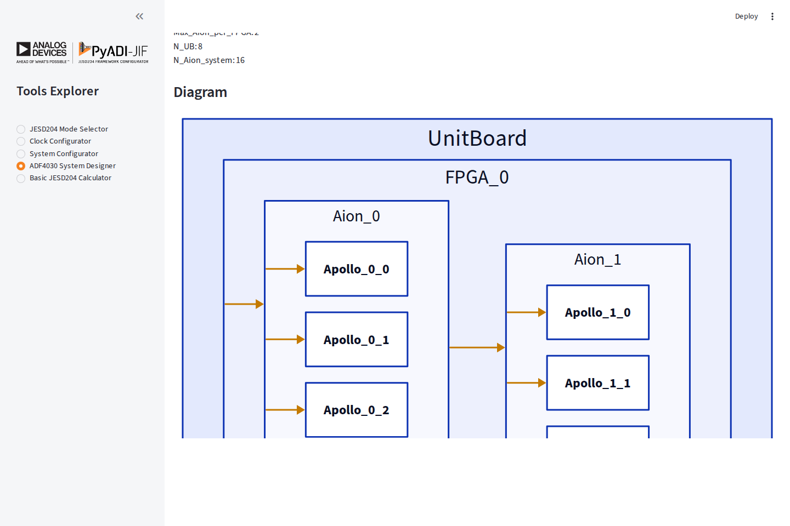
The focused topology view makes the Unit Board, FPGA, Aion, and Apollo hierarchy—and the clock-distribution connections between them—visible without leaving the sizing workflow.
Example Workflow
# Example: 32 Apollo devices, 8 per board, 1 FPGA per board, tree topology
#
# Inputs in the page:
# N = 32
# N_Apollo = 8
# N_FPGA = 1
# Architecture = tree
# N_branch = 2
# Diagram scope = ub
#
# Result:
# N_Aion_UB = 2 (each board needs 2 Aions: 1 root + 1 leaf)
# N_UB = 4 (4 boards needed for 32 Apollos)
# ...plus the topology SVG below the summary.
Basic JESD204 Calculator
The Basic JESD204 Calculator provides a quick link-budget check without loading
a converter model or running the constraint solver. Enter the lane count (L),
converter count (M), bits per sample (Np), and JESD204 class, then calculate
from either a sample rate or a lane rate.
Features
Bidirectional rate calculation: derive lane rate from sample rate, or sample rate from lane rate
JESD204B/C overhead: applies the appropriate 8b/10b or 64b/66b encoding factor
Core clock estimate: reports the link-layer core clock alongside the derived rate
No solver required: useful for fast feasibility checks and transceiver budgeting

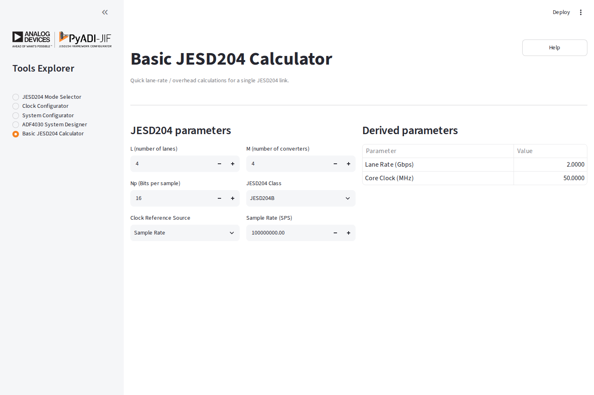
Inputs and derived parameters share one compact view, making the calculator a quick companion to the Mode Selector and System Configurator.
Example Workflow
Set
L=4,M=4, andNp=16.Select JESD204B and Sample Rate as the reference source.
Enter the converter sample rate.
Read the resulting lane rate and core clock from Derived parameters.
Frequency Planner
The Frequency Planner shows what each stage of a converter’s digital
down-conversion (Rx) or up-conversion (Tx) chain does to your signals. The
page centres on a clickable block diagram of the datapath, in the style of the
datasheet. Click a block to edit it in the settings panel beside the diagram,
then pick an output path to see the spectrum after each stage on that path,
with a quick verdict underneath. Today it supports the AD9084; parts are
handled through an adapter layer, so AD9081 and AD9088 can be added later
without changing the maths. The calculation lives in the adijif.freqplan
package and uses no solver.
Features
Rx and Tx tabs: Rx runs ADC, CDDC, then FDDC. Tx runs FDUC, CDUC, then DAC.
Datapath diagram: blocks in columns, wires between them, and a verdict badge on every output.
Settings panel: click a block to edit its enable, NCO, decimation or interpolation, source, and targets.
Path selector: choose one output path and see only that path’s spectra, with each signal in its own colour and images and aliases marked.
Verdict per output: how much of each target signal is captured, what unwanted energy lands in band, and how much of the output bandwidth is used.
All settings: a collapsed expander with the rates, signals and full stage tables for bulk edits, including DAC routing on Tx.
Export, Load, and Reset: save the plan and view as JSON, restore it later, or return to the defaults.

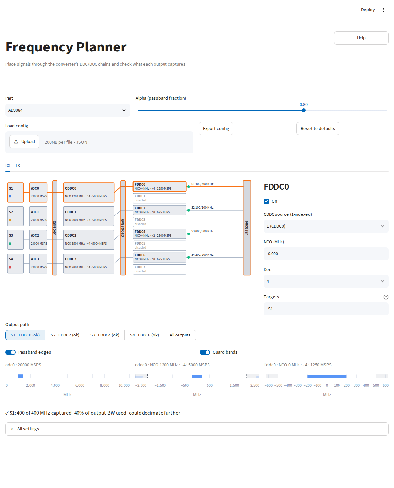
The default Rx plan. The datapath diagram (signal inputs, ADCs, ADC MUX, CDDCs, CROSSBAR, FDDCs and JESD204) is on the left with the settings panel of the selected block beside it. Below, the path selector picks one output and shows that path’s spectra (ADC, CDDC and FDDC, left to right) with its verdict underneath.
The brick-wall model
The planner uses an ideal filter at every decimating or interpolating stage. One global value, alpha (default 0.8, adjustable from 0.5 to 0.95), is the usable fraction of a Nyquist band. Which band depends on the direction:
DDC (decimation) stages use the output rate
fs_out: the passband edge isp = alpha * fs_out / 2and the stopband starts ats = fs_out - p.DUC (interpolation) stages use the input rate
fs_in: the passband edge isp = alpha * fs_in / 2and the stopband starts ats = fs_in - p. Images beyondsare rejected.
In both cases the stage passes frequencies from -p to +p. Anything between
p and s is in the transition band: its energy is drawn attenuated (faded)
and counts as only a partial problem in the verdict. Anything beyond the
stopband is removed. The DAC row does not use alpha; it shows the first two
Nyquist zones, [0, fs] (see the DAC notes under step 4).
The same alpha applies to Rx and Tx.
Usage
1. Pick the part and alpha
Choose the part and set the alpha slider at the top of the page.
2. Read the diagram
Each tab draws its datapath as columns of blocks joined by wires. On Rx the
columns are the signal inputs (one block per ADC, showing its signals as
colour chips), the ADCs, the ADC MUX, the CDDCs, the CROSSBAR, the FDDCs, and
JESD204. On Tx they are the FDUCs (each with colour chips for its signals),
the CROSSBAR, the CDUCs, DAC ROUTE, the DACs, and RF OUT. Where a block holds
several signals its label shows the first and a count, such as S1 +2;
hover over the block for the full list.
A dashed, dimmed block is disabled. An FDDC whose source CDDC is disabled has no wire from the CROSSBAR.
The blocks and wires on the selected path are drawn in orange.
The selected block, the one shown in the settings panel, has a heavier outline.
Every output block carries a badge, a compact form of its verdict, coloured by status: green for ok, amber for warn and red for error. An ok badge shows the first target’s capture (for example
S1 400/400 MHz). A warn or error badge shows the reason: the interferer (S9 in band,S9 image in band, orS1/S2 overlapon a DAC, with(att.)when it is only in a transition band), or else the partly captured target (for exampleS1 250/400 MHz).
3. Edit a block
Click a block to open its settings panel on the right of the diagram. The panel depends on the block:
CDDC (Rx): on/off, RF NCO (MHz), decimation, the feeding ADC, and the targets.
FDDC (Rx): on/off, the CDDC source (1-indexed), NCO (MHz), decimation, and the targets.
Signal input or ADC (Rx): the converter rate (read-only) and the signals that arrive on that ADC, as an editable table with name, centre (MHz) and bandwidth (MHz). Both blocks open the same panel. Add or delete rows to add or remove signals there.
FDUC (Tx): on/off, the CDUC source (1-indexed), NCO (MHz), and the signals carried by that FDUC.
CDUC (Tx): on/off and the DAC NCO (MHz).
DAC (Tx): the CDUCs summed into the DAC (1-indexed, comma-separated), with the DAC rate shown read-only. Change the rates under All settings.
ADC MUX, CROSSBAR, JESD204, DAC ROUTE, RF OUT: read-only descriptions of the routing. Edit the underlying choices on the CDDC, FDDC, DAC or FDUC panels, or under All settings.
Clicking a block that lies on another path also switches the selected path to the first path that contains it. On Tx, a signal’s centre is a baseband offset at the FDUC input, and a bandwidth of 0 describes a CW tone.
NCO and target conventions
NCO frequencies are entered in MHz. The conventions differ by stage:
CDDC (Rx): enter the absolute RF frequency to bring to DC. The page folds it into the first Nyquist zone
[0, fs/2]and records the Nyquist zone when you export. RF frequencies must be zero or greater. A signal in an even Nyquist zone is spectrally inverted by sampling; the exported Nyquist zone tells the hardware to undo that inversion in the CDDC, so the page draws the CDDC output (and everything after it) in RF order: a signal above the CDDC’s RF NCO appears at a positive offset.FDDC (Rx): enter the NCO relative to its CDDC output, so 0 means the centre of the CDDC output. The FDDC source column is the 1-indexed CDDC number that feeds it.
FDUC (Tx): the NCO moves DC to
+f. It is applied after FDUC interpolation, so it offsets the signal at the CDUC input rate. The source column is the 1-indexed CDUC number it feeds.CDUC (Tx): the NCO is entered in DAC output terms, the frequency at the DAC that the CDUC input’s DC maps to. It moves DC to
+f.Targets: a comma-separated list of the signal names an output should capture. Leave it empty to use every signal that lands there.
The CDDC’s ADC is set in its panel, and a DAC’s CDUCs in the DAC’s panel. Each DAC sums the 1-indexed CDUC numbers listed for it. Entries that are not numbers, or are outside the valid CDUC range, are ignored with a note.
4. Pick a path and read the spectra
Below the diagram, the Output path selector chooses what to plot. Each
choice is labelled with its path and verdict status, such as
S1 · FDDC0 (warn).
Rx has one path per output. An FDDC path runs ADC, CDDC, then FDDC. A CDDC that no enabled FDDC uses is itself an output; its path shows the ADC and CDDC spectra and a note, “CDDC output, no FDDC”.
Tx has one path per signal and DAC it reaches: FDUC, CDUC, then DAC, labelled like
S1 · FDUC0 → DAC0. The DAC chart shows everything on that DAC, not only the path’s signal.All outputs drops the charts and lists one verdict line per output: per path on Rx, and per DAC on Tx, including DACs that no signal reaches (shown as
no signals).
Clicking a block in the diagram also selects a path through it. A saved path that no longer exists falls back to the first path, or to All outputs when there are no paths.
The selected path’s spectra are drawn left to right in signal order, with the verdict underneath. Two toggles beside the selector declutter the charts:
Passband edges toggles the passband markers.
Guard bands toggles the shaded transition and guard regions.
Each output has a one-line verdict:
✓ ok: every target is fully captured and there is no unwanted energy in band.
⚠ warn: a target is only partly captured, or the only interference is attenuated (in a transition band).
✗ error: an unattenuated interferer or image sits in the usable band, or the stage itself reported an error.
When an output uses half or less of its bandwidth, the message adds could decimate further: a lower output rate would still hold your targets.
On the Tx side, each DAC row covers its first two Nyquist zones, [0, fs]
(the caption says so). The DAC output is real, so every signal is drawn
together with its mirror across DC and its mirror across fs/2; mirrored
pieces are drawn faded as images. A signal whose complex frequency is
negative (for example a CDUC DAC NCO above fs/2, or a negative one) reaches
the output at |f|, so its mirrored energy counts toward its capture. The
verdict checks [0, fs/2] for collisions between different signals, or
between a signal and its own mirror (a signal straddling DC or fs/2).

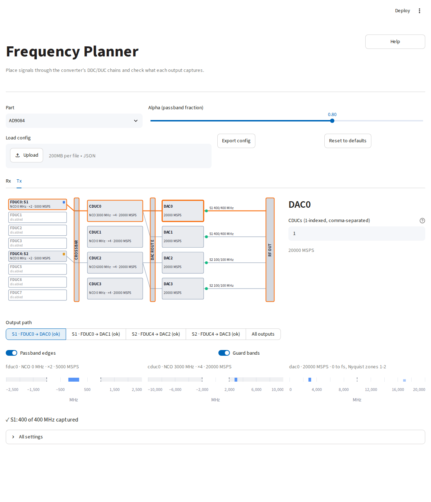
The default Tx plan, showing the S1 · FDUC0 → DAC0 path and that DAC’s
chart. The diagram runs from the FDUCs through the CROSSBAR and the CDUCs, then
DAC ROUTE, to the DACs and RF OUT, and the settings panel edits the selected
block. The DAC chart spans [0, fs], so the faded mirror above fs/2 is
visible.
The Tx tab also warns, under the diagram, about signals that can never reach a DAC: a signal
whose FDUC does not exist or is disabled, or whose CDUC is disabled or not
routed to any DAC (for example S3: FDUC1 is disabled or
S3: CDUC1 is not routed to any DAC).
Every message names blocks 0-indexed, as the diagram does: CDDC0 and
CDUC0 are the first CDDC and CDUC, so an FDDC fed by a disabled third CDDC
reports source CDDC2 is disabled. Only the source values are 1-indexed:
the FDDC and FDUC source columns and the DAC routing table hold 1-indexed
CDDC/CDUC numbers, as in adijif, so source value 3 is CDDC2. An
out-of-range source value is reported as a bare number with its valid range,
for example S1: FDUC0 source 9 is out of range 1 to 4.
5. All settings
The All settings expander, collapsed by default, holds the rates and the full tables: the signals, the CDDC and FDDC tables on Rx, and the FDUC and CDUC tables plus the DAC routing table on Tx. Use it for bulk edits and for adding or removing signals across all inputs. Edits here and in the block panels act on the same plan. If an edit leaves the plan invalid, the tab shows the problem in place of the diagram and asks you to fix it here.
6. Export, load, and reset
Export config downloads freqplan.json containing the plan and the current
view. Load config accepts such a file and rebuilds both tabs, including the selected paths, from it; a file
with the wrong version, an unsupported part, wrong list lengths, or values
outside the widget limits is rejected with an error and the current plan is
left alone. Reset to defaults restores the starting plan.
Config file format
The file is plain JSON. All frequencies are in Hz. The sketch below shows the
structure; the rx and tx sections are each optional (a file may hold only
one), and lists are shown shortened.
{
"version": 1,
"part": "AD9084",
"alpha": 0.8,
"rx": {
"adc_rate_hz": 20000000000.0,
"signals": [
{"name": "A", "center_hz": 2400000000.0,
"bandwidth_hz": 100000000.0, "source": 0}
],
"adc_to_cddc": [0, 1, 2, 3],
"cddc_rf_hz": [2400000000.0, 0.0, 0.0, 0.0],
"targets": {"cddc0": ["A"]},
"datapath": {
"cddc": {
"enabled": [true, true, true, true],
"decimations": [4, 1, 1, 1],
"nco_frequencies": [2400000000.0, 0, 0, 0],
"nyquist_zones": [1, 1, 1, 1],
"nco_phases": [0, 0, 0, 0]
},
"fddc": {
"enabled": [false, "..."],
"decimations": [1, "..."],
"nco_frequencies": [0, "..."],
"nco_phases": [0, "..."],
"source": [1, 1, 2, 2, 3, 3, 4, 4]
}
}
},
"tx": {
"dac_rate_hz": 20000000000.0,
"signals": [
{"name": "A", "center_hz": 0.0,
"bandwidth_hz": 100000000.0, "source": 0}
],
"cduc_dac_hz": [3000000000.0, 0.0, 6000000000.0, 0.0],
"datapath": {
"cduc": {
"enabled": [true, true, true, true],
"interpolation": 4,
"nco_frequencies": [3000000000.0, 0, 6000000000.0, 0],
"nco_phases": [0, 0, 0, 0],
"sources": [[1], [1], [3], [3]]
},
"fduc": {
"enabled": [false, "..."],
"interpolation": 2,
"nco_frequencies": [0, "..."],
"nco_phases": [0, "..."],
"sources": [1, 1, 2, 2, 3, 3, 4, 4]
}
}
},
"view": {
"rx": {"path": "fddc0", "show_passband": true, "show_alias": true},
"tx": {"path": "S1@dac0", "show_passband": true, "show_alias": true}
}
}
Notes on the fields:
versionmust equal1; any other value is rejected on load.alphadefaults to 0.8 if missing.partmust be a supported part.rx.cddc_rf_hzholds the absolute RF centre of each CDDC. The matchingdatapath.cddc.nco_frequenciesare those values folded into[0, fs/2], anddatapath.cddc.nyquist_zonesrecords the zone each came from. On load the RF values are the source of truth.datapath.fddc.nco_frequenciesare exported wrapped into the source CDDC’s output band[-fs_cddc_out/2, fs_cddc_out/2), anddatapath.fduc.nco_frequenciesinto the CDUC input band[-fs_fduc_out/2, fs_fduc_out/2), as the hardware expects. The spectra are the same either way, so after a reload an FDDC or FDUC NCO may show its wrapped value.rx.targetsmaps a stage name (cddc0,fddc1, and so on) to the signal names it should capture.tx.cduc_dac_hzholds the DAC-side CDUC NCOs as entered, anddatapath.cduc.nco_frequenciesthe same values wrapped into the DAC’s Nyquist range.datapath.cduc.sourcesis the DAC routing (one list of 1-indexed CDUC numbers per DAC).datapath.fduc.sourcesgives the 1-indexed CDUC each FDUC feeds.Every per-stage list must have exactly the length the part expects (for AD9084: 4 CDDCs, 8 FDDCs, 4 CDUCs, 8 FDUCs); a mismatch is an error.
viewstores, per tab, the selected outputpath(a path id such asfddc0,S1@dac0, orall) and theshow_passbandandshow_aliastoggles. It may be empty. Apaththat no longer exists falls back to the first path, or to All outputs when there are no paths. The olderhidden_kindsandhidden_channelskeys are ignored on load.
Example Workflow
Select AD9084 and leave alpha at 0.8.
On the Rx tab, open All settings, set the ADC rate, and add a signal, for example
Aat 2400 MHz with 100 MHz bandwidth on ADC 0. (You can also click ADC0 in the diagram and add the signal in its panel.)Click the
cddc0block, set its RF NCO to 2400 MHz and choose a decimation.In the default plan
cddc0feedsfddc0(FDDC source 1), sofddc0is the output. Clickfddc0, set its targets toA, then pick theA · FDDC0path and read the verdict under its spectra. If it reports a partial capture, lower the FDDC decimation; if it says could decimate further, raise it. (A CDDC is itself an output only when no enabled FDDC uses it.)To split off a narrower channel, click another FDDC, enable it, and feed it from
cddc0with its NCO relative to the CDDC output.Switch to the Tx tab and set the CDUC DAC-side NCO and the DAC’s CDUCs to place the signal in the output spectrum, checking in the DAC chart that no signals or images collide.
Click Export config to save the plan, and Load config to restore it later.
Example: second Nyquist zone and a partial capture
The repository ships a worked example in two forms:
examples/freqplan_ad9084.pybuilds the plan with theadijif.freqplanAPI, prints the verdict for every output, and writes the config file.examples/freqplan_ad9084.jsonis that config file, ready to open with Load config.
Starting from the default plan, the example makes two changes:
S4 moves to 12.2 GHz, in the second Nyquist zone of the 20 GSPS ADC. The
adc3spectrum on theS4 · FDDC6path shows it folded to 7.8 GHz.cddc3is set to the RF value 12.2 GHz; the exported config records the folded NCO (7.8 GHz) and Nyquist zone 2. S4 still arrives centred infddc6.FDDC0 decimates by 16, not 4. The output rate drops to 312.5 MSPS and the usable band to ±125 MHz, so only 250 MHz of the 400 MHz S1 fits. The
fddc0verdict changes to a warning.

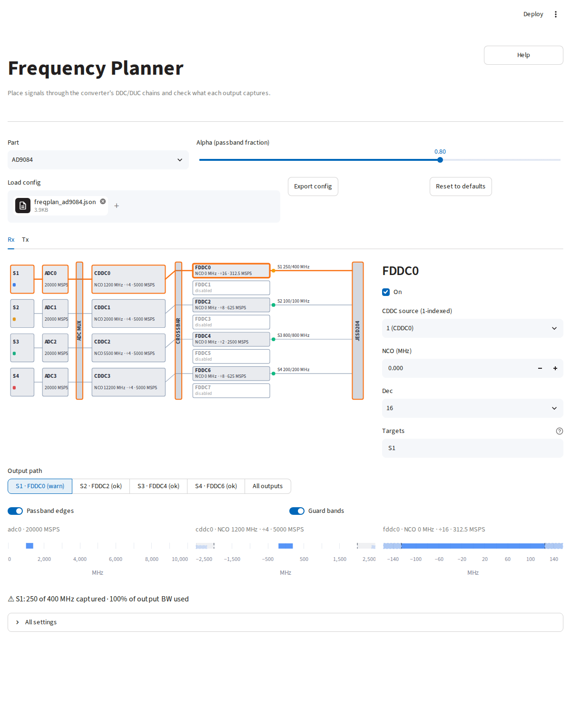
The example config loaded in the page, showing the S1 · FDDC0 (warn) path:
the ADC, CDDC and FDDC spectra with the partial-capture warning for S1 under
them. Select the S4 · FDDC6 path to see S4 folded from the second Nyquist
zone.
The same plan from Python:
from adijif.freqplan import (
Signal, compute_rx, default_rx_plan, dumps, evaluate_output,
)
rx = default_rx_plan()
rx.signals[3] = Signal("S4", 12.2e9, 200e6, 3) # 2nd Nyquist zone
rx.cddc_rf_hz[3] = 12.2e9 # CDDC NCO as RF frequency
rx.datapath.fddc_decimations[0] = 16 # narrow FDDC0
result = compute_rx(rx)
signals = {s.name: s for s in rx.signals}
for name, stage in result.stages.items():
if stage.is_output:
verdict = evaluate_output(stage, signals, rx.targets.get(name, []))
print(name, verdict.status, verdict.messages)
open("freqplan.json", "w").write(dumps(rx, None)) # load in the page
Running the script prints:
fddc0 warn ['S1: 250 of 400 MHz captured', '100% of output BW used']
fddc2 ok ['S2: 100 of 100 MHz captured', '20% of output BW used', 'could decimate further']
fddc4 ok ['S3: 800 of 800 MHz captured', '40% of output BW used', 'could decimate further']
fddc6 ok ['S4: 200 of 200 MHz captured', '40% of output BW used', 'could decimate further']
Out of Scope
The planner is a quick sanity check, not a signal-integrity simulator. It does not model:
real filter shapes, ripple, or rejection (filters are ideal brick walls);
NCO or ADC spurs, harmonics, or noise;
the DAC sinc roll-off.
It also does not generate pyadi-iio scripts (planned for later) or JESD profiles and device-tree fragments.
Tips and Best Practices
Performance Optimization
Start Simple: Begin with basic configurations before adding complexity
Use Filters: Narrow down modes early to reduce computation
Valid Modes Toggle: Hide invalid modes to focus on viable options
Common Workflows
Finding Compatible Modes
Set your sample rate requirement
Filter by available lane count
Review lane rates against FPGA capabilities
Select mode with margin for PVT variation
Clock System Design
Identify all required clocks (ADC, FPGA ref, SYSREF, etc.)
Start with reference clock you have available
Configure outputs in priority order
Verify clock quality (jitter, phase noise)
System Integration
Use System Configurator for initial feasibility
Switch to individual tools for fine-tuning
Validate with hardware using exported configurations
Troubleshooting
No valid modes found:
Relax filter constraints
Check sample rate is within device limits
Verify decimation/interpolation settings
Clock configuration fails:
Check if output frequencies are achievable with selected reference
Verify VCO frequency ranges
Try different internal divider settings
System solve fails:
Ensure all components are compatible
Check FPGA transceiver supports required lane rates
Verify reference clock is appropriate for FPGA
API Access
While the JIF Tools Explorer provides a graphical interface, all functionality is also available through the pyadi-jif Python API for scripting and automation:
import adijif
# Example: Programmatic JESD mode search
converter = adijif.AD9680()
converter.sample_clock = 1e9
converter.decimation = 1
# Get valid modes
modes = converter.quick_configuration_modes
# Or use the mode selector
from adijif.utils import get_jesd_mode_from_params
found_modes = get_jesd_mode_from_params(
converter,
L=4,
M=2,
jesd_class="jesd204b"
)
For more details on the Python API, see the API Documentation.
Technical Details
Architecture
The JIF Tools Explorer is built using:
Streamlit: Web application framework
pyadi-jif: Core JESD204 configuration library
docplex: Constraint solver (CPLEX)
D2: Diagram generation
State Management
The application uses Streamlit’s session state to maintain:
Part selections across tool switches
Configuration values
Generated diagrams (cached for performance)
Performance Considerations
Diagram generation is cached per part
Mode searching is optimized with early filtering
Solver constraints are pre-validated
Contributing
To contribute to JIF Tools Explorer:
Test changes with:
streamlit run adijif/tools/explorer/main.pyAdd tests in
tests/tools/Update documentation as needed
Support
For issues or questions:
GitHub Issues: https://github.com/analogdevicesinc/pyadi-jif/issues
Documentation: https://analogdevicesinc.github.io/pyadi-jif/
ADI Support: https://ez.analog.com/